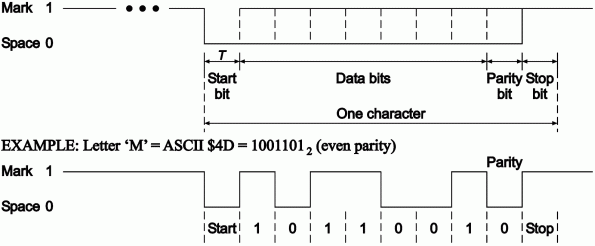

Un sistema asíncrono es aquel en el que cada carácter o byte se envía dentro de una trama.
Formato del mensaje:
Una trama asíncrona suele tener el siguiente formato:
- Bit de arranque
- Datos, normalmente 7 u 8 pero pueden ser 5 o 6
- Bit de paridad
- Bit(s) de parada, normalmente 1, 1.5 o 2. Un valor de 1.5 significa que el nivel se mantiene durante 1.5 veces la duración de un sólo bit
